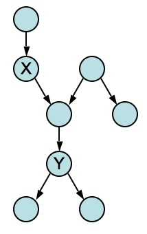

Homework Assignment #4: Probabilistic Reasoning
Due: November 14, 2007
- (15%) Problem 13.9 from R&N.
It is quite often useful to consider the effect of some specific
proposition in the context of some general background evidence that
remains fixed, rather than the complete absense of information.
- Prove the conditionalized version of the general product rule:
P(X,Y|e) = P(X|Y,e)P(Y|e).
- Prove the conditionalized version of Bayes' rule:
P(Y|X,e) = P(X|Y,e) P(Y|e) / P(X|e).
- (15%) Problem 13.15 from R&N.
Suppose you are a witness to a nighttime hit-and-run accident involving
a taxi in Athens. All taxis in Athens are blue or green. You swear,
under oath, that the taxi was blue. Extensive testing shows that, under
the dim lighting conditions, discrimination between blue and green is
75% reliable. Is it possible to calculate the most likely color of the
taxi? (Hint: distinguish between the proposition that the taxi
is blue and the proposition that it appears blue.)
What about now, given that 9 out of 10 Athenian taxis are green?
- (25%)
Consider the following Bayesian network:

- Suppose that all the variables are Boolean. How many parameters
(real numbers) are needed to specify an arbitrary joint probability
distribution over 8 variables?
How many parameters are needed to define the joint probability
distribution using the above Bayesian network?
- Which of the following probabilistic relations are implied by the
structure of the above Bayesian network? Explain briefly.
| (a) |
P(E|G) = P(E) |
| (b) |
P(C|D) = P(C) |
| (c) |
P(C|D,A) = P(C|A) |
| (d) |
P(B|A,C) = P(B|A) |
| (e) |
P(C,D|E) = P(C,D) |
| (f) |
P(F|A,E,H) = P(F|A) |
| (g) |
P(A,C|D,E,H) = P(A,C|D) |
- Express P(A|G) in terms of the probabilities
directly available in the network. You will need to use Bayes' rule
and conditioning on one or more other variables.
- (20%)
Suppose that in a polytree network, X is an ancestor of Y and we
wish to compute P(Y|X) in terms of the CPT entries of the network.
Explain why this computation can be done using conditioning operations
only and write a general expression for P(Y|X).
(Hint: you may find
it useful to consider an example such as the following, although the
specific details of the example need not appear in your answer.)

- (25%)
You are an AI consultant for an auto insurance company. Your task is to
construct a Bayesian network that will allow the company to decide how
much financial risk they run from various policy holders, given certain
data about the policy holders.
In order to design a Bayesian network, you need output variables
and evidence variables. The output variables are those for which
the insurance company is trying to get a probability distribution for
their possible values. The evidence variables are those variables for
which you can obtain information, on the basis of which it is legal to
make decisions, and that are relevant to the decision.
Output variables represent the cost of various catastrophic events that
the insurance company might have to reimburse. In the automobile
insurance domain, the major output variables are the medical cost
(MedCost), property cost (PropCost), and intangible liability cost
(ILiCost). Medical and property costs are those incurred by all
individuals involved in an accident; auto theft or vandalism might also
incur property cost. Intangible liability costs are legal penalties for
things like``pain and suffering,'' punitive damages, and so forth, that a
driver might incur in an accident in which he or she is at fault.
Evidence variables for this domain include the driver's age and record;
whether or not he or she owns another car; how far he or she drives per
year; the vehicle's make, model and year; whether it has safety
equipment such as airbag and antilock brakes; where it is garaged and
whether it has an antitheft device.
- Build a possible belief network for this problem.
You will need to decide on
suitable domains for the variables, bearing in mind the need to
discretize. You will also need to add intermediate nodes such as
DrivingSkill and AutoRuggedness.
- Give reasonable conditional probability tables to a few (but not
all!) nodes.
- How many independent values are necessary to define the joint
probability distribution of your model, assuming no conditional
independence relations hold among the variables? How many independent
values are needed to complete your model using the conditional
independence relations?
- (optional)
Use one of the free belief networks software packages (or a
free demo) to complete the assignment. You can use Google's list of
Bayes net software at http://directory.google.com/Top/Computers/Artificial_Intelligence/Belief_Networks/Software/.
Some good packages for this project include JavaBayes, Netica from
Norsys, and MSBN from Microsoft. Confirm first that the free version
can handle the size and type of network you want to create.
Download one of these packages and build the network of question (5).
Give plausible conditional probability tables for each node.
- Illustrate how your network performs with a some sample pieces of
evidence.
- Explain how an insurance company would obtain reliable probability
estimated for the different CPTs in the network.
- How would you convince the insurance company to adopt your model?
© 2007 Shlomo Zilberstein.